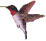

⋆౨ৎ˚⟡˖ ࣪Welcome to Cat Walk ⋆౨ৎ˚⟡˖ ࣪
～♡ Take a peaceful walk with a philosophical cat! ♡～
⋆｡°✩ About ✩°｡⋆
Welcome to a dreamy walk through nature with a very thoughtful cat!
Here, time flows differently as you wander through a world where butterflies
dance,
birds soar overhead, and philosophical thoughts drift like clouds. Our feline friend
contemplates the deeper meanings of existence while nature's creatures come and go.
The sky changes as time accelerates, creating a peaceful journey
through day and night.
⋆｡°✩ Features ✩°｡⋆
 Walking cat companion
Walking cat companion Day/night cycle
Day/night cycle Nature friends
Nature friends- Deep cat thoughts
⋆｡°✩ Friends You'll Meet ✩°｡⋆
